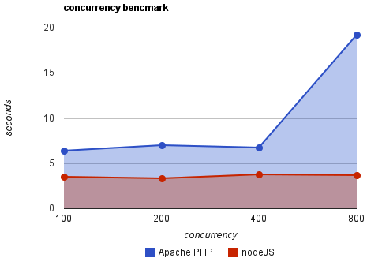

Soy Karlos g Liberal
...también se me conoce como patxangas

Investic Fuimos

Interzonas Seremos
Nuestra propuesta
Release Early, Release Often y Lánzalo como sea.
Somos código y hacemos código, queremos que nuestro código se use, se mejore, se ensucie se mezcle, mute o muera. El código es como un ser vivo que hasta ahora lo teníamos encerrado en nuestras cuatro paredes, ahora preferimos que como un virus viva libre y ocurra lo que tenga que ocurrir con él
Libera rápido, libera pronto, y haz un bonito cadáver
Que vamos a hacer
#drupal #nodejs #visaulizacion de datos, #fluidinfo, #metora, #backbone, #nodejitsu, #javascript, #arduino
Pero en definitiva lo que queremos ser es...
Modernos
Navarraencolores.com
Experimentando con Opendata.
Navarraencolores.com es una puesta en práctica de la experimentación que estábamos realizando entorno a los datos abiertos.
Levábamos tiempo "kuskuseando" en el ambiente de node.js y los compañeros (ex)Drupaleros de DevelopmentSeed habían creado el proyecto Tilemill
El concurso Opendata Navarra organizado por el Gobierno de Navarra, nos brindó la oportunidad de llevar a la práctica el esfuerzo dedicado a la experimentación e investigación
Lo vemos en detalle
Node.js
Ya están aquííííííííííííí
Ya están aquííííííííííííí
Qué es Node.js

Qué es Node.js
Node.js es un entorno JavaScript del lado de servidor que utiliza un modelo asíncrono y dirigido por eventos.
Node usa el motor de JavaScript V8 de Google: una VM tremendamente rápida y de gran calidad.

Un poco de código
var http = require('http');
var s = http.createServer(function (req, res) {
res.writeHead(200, {'Content-Type': 'text/plain'});
res.end('Hello World\n');
});
s.listen(8000);
console.log('Server running!');
Lo iniciamos
$ node hello_world.js
Server Running!
Node le dice al sistema que le avise (epoll, kqueue, etc.) cuando un cliente se conecta. Mientras tanto se pondrá a dormir (sleep). Si alguien se conecta, se ejecuta el callback anónimo definido en createServer.
Si abrimos http://localhost:8000/ en el navegador entonces obtenemos "Hello World".
MapBox Tilemill
Demo
Tilestream
Demo
Ahora lo cocinamos todo con Drupal
un poco de Openlayers
Demo
Enlaces, referecias y agradecimientos
Los creadores en la sombra
- Aitor Resano Lafuente @Aitor_rl
- Miren Arrese Alverez @Merisu
Referencias y enlaces
- Para la charla hemos usado Kinout
- Foto modernos: El pais
- Naranja mecánica: Swotti.com
- Foto tortuga: substack.net
- Info node.js: rmunoz.net